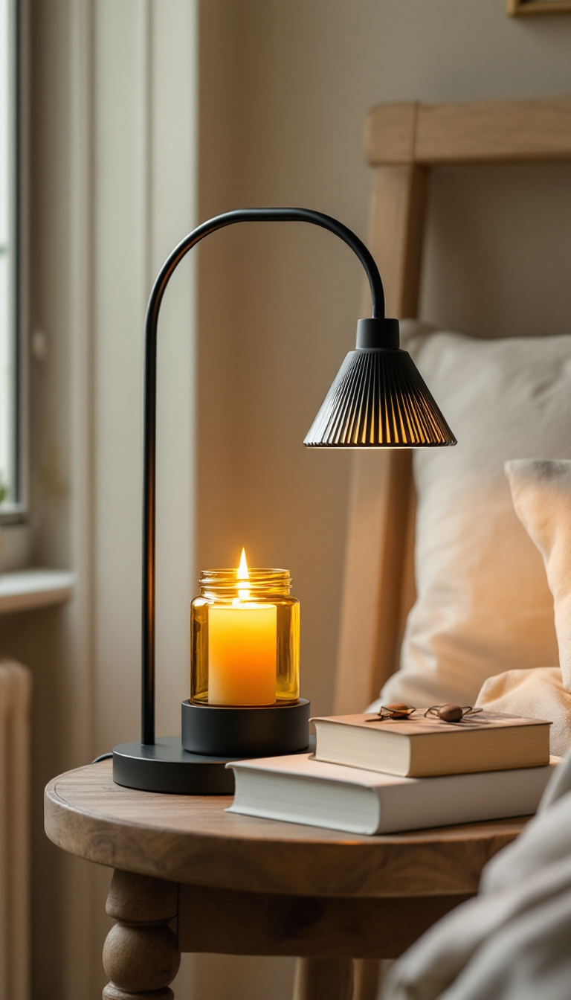
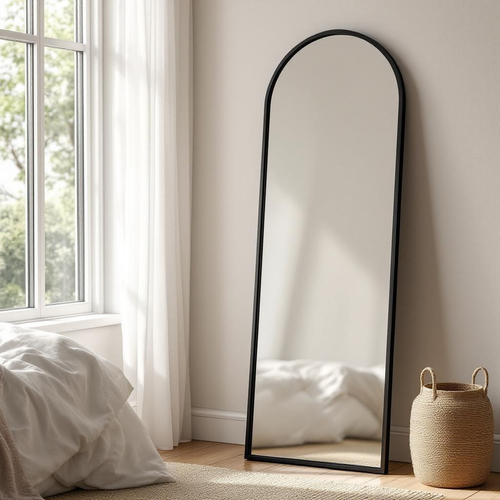

Most bedroom transformations fail not because the pieces are wrong but because the room is missing the four things that actually create atmosphere: a warm ambient lamp, a scent source that looks as good as it smells, a layer of texture on the bed, and something that makes the walls feel intentional. These four Amazon finds cover all of it. They work together, they are all under $100, and the difference they make is visible the moment you walk in.
Retro Mushroom Lamp
The Retro Mushroom Lamp is the piece that quietly changes everything about a bedroom at night. Its rounded dome disperses light in a wide, soft arc that fills the room with warmth without any harsh spots or flat overhead brightness. The amber glow it casts is exactly the kind of light that makes a room feel like a destination rather than a place you just sleep. The silhouette is distinctive enough to read as a design decision on any nightstand or shelf, and it pairs effortlessly with everything from minimal white bedding to warmer, layered aesthetics. If your bedroom currently goes from overhead light to total darkness with nothing in between, this is the lamp that fixes that.
Candle Warmer Lamp
A Candle Warmer Lamp is the upgrade that makes you wonder why you ever used an open flame. It uses gentle heat from above to melt your candle slowly from the top down, which means you get the full scent throw without the risk, the soot, or the tunneling you get from burning a candle the traditional way. The lamp itself has an elegant adjustable arm that sits over your candle jar and looks like a piece of decor even when it is not in use. It makes candles last significantly longer, which more than pays for itself over time. Place it on a nightstand next to the mushroom lamp and your bedside table instantly looks like something from a hotel suite. Scent is one of the most underrated elements in a bedroom, and this is the cleanest way to use it.
Chunky Knit Throw Blanket
A flat bed always looks unfinished, no matter how good the sheets are. A Chunky Knit Throw Blanket solves this in the most tactile way possible. Draped across the foot of the bed or folded over a corner, it adds the kind of depth and texture that makes a bedroom look genuinely styled rather than just cleaned up. The cream and neutral tones in this one sit naturally against white, gray, or warm-toned bedding, and the thick weave gives it a visual weight that reads as intentional and cozy. It is also genuinely warm for the months you actually want to use it, and a perfect medium layer when you do not. One of those pieces that looks like a design decision and functions like a necessity.
Arched Wall Mirror
The Arched Wall Mirror is the piece that makes people ask what you did to your room. A large arched mirror does two things simultaneously: it bounces natural light across the space and creates a sense of depth that makes even a small bedroom feel more open. The gold frame is warm without being loud, and the arch silhouette has that classic editorial quality that works across every aesthetic. It leans against the wall so there is no mounting required, which means you can move it or adjust it whenever you want. Against a corner, behind a plant, or positioned to catch the window light, it reads differently in every spot. If your bedroom feels closed in or dim, this mirror is the fastest fix that also looks beautiful.
Four pieces. A lamp that transforms the light. A warmer that fills the room with scent. A throw that adds texture to the bed. A mirror that opens up the space. None of them require installation, none of them take more than a few minutes to set up, and together they address the specific things that make a bedroom feel warm and intentional versus just functional. Save this post before you forget about it, or share it with someone who keeps saying their bedroom needs something but cannot figure out what.
Everything From This Post
Retro Mushroom Lamp
Candle Warmer Lamp Chunky Knit Throw Blanket
Chunky Knit Throw Blanket

Arched Wall MirrorAs an Amazon Associate I earn from qualifying purchases. All prices accurate at time of publishing.